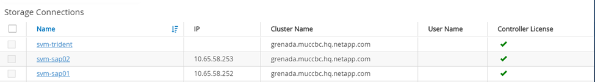
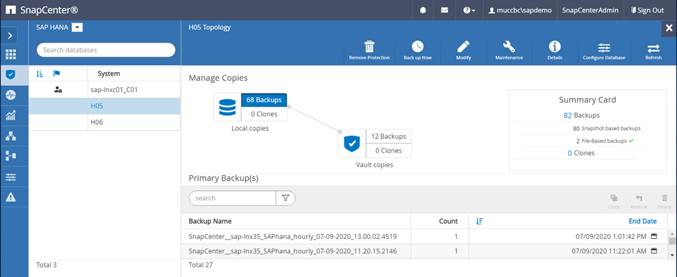
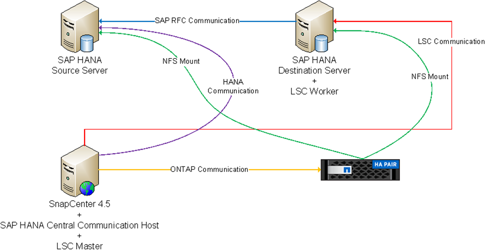
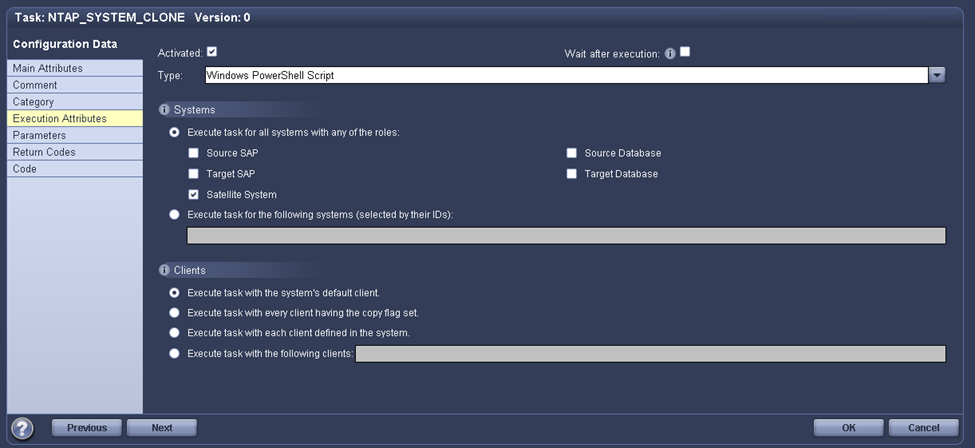
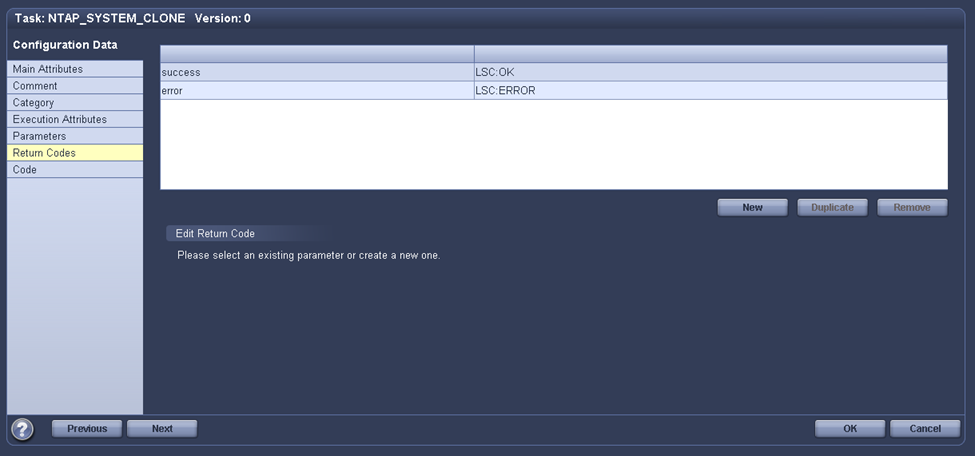

Solicitar cambios en el documento
Solicitar cambios en el documento Editar en GitHub
Editar en GitHub Guía del colaborador
Guía del colaboradorActualización del sistema SAP HANA con LSC y SnapCenter
Colaboradores
En esta sección se describe cómo integrar los SC con SnapCenter de NetApp. La integración entre LSC y SnapCenter admite todas las bases de datos admitidas por SAP. No obstante, debemos diferenciar entre SAP AnyDB y SAP HANA porque SAP HANA ofrece un host de comunicación central que no está disponible para SAP AnyDB.
La instalación predeterminada del agente SnapCenter y del complemento de base de datos para SAP AnyDB es una instalación local del agente SnapCenter, además del complemento de base de datos correspondiente para el servidor de bases de datos.
En esta sección, la integración entre LSC y SnapCenter se describe mediante una base de datos SAP HANA a modo de ejemplo. Como se ha indicado anteriormente para SAP HANA, existen dos opciones diferentes para la instalación del agente de SnapCenter y el complemento de base de datos SAP HANA:
-
Un agente SnapCenter estándar y una instalación del complemento SAP HANA. en una instalación estándar, el agente SnapCenter y el complemento SAP HANA se instalan de forma local en el servidor de base de datos SAP HANA.
-
Una instalación de SnapCenter con un host de comunicación central. se instala Un host de comunicación central con el agente SnapCenter, el complemento SAP HANA y el cliente de base de datos HANA que gestiona todas las operaciones relacionadas con la base de datos necesarias para realizar copias de seguridad y restaurar una base de datos SAP HANA para varios sistemas SAP HANA del panorama. Por lo tanto, un host de comunicación central no necesita tener instalado un sistema de base de datos SAP HANA completo.
Si quiere más información sobre estos diferentes agentes de SnapCenter y las opciones de instalación de complementos de base de datos SAP HANA, consulte el informe técnico "TR-4614: Backup y recuperación de datos de SAP HANA con SnapCenter".
En las siguientes secciones se destacan las diferencias entre la integración de LSC con SnapCenter mediante la instalación estándar o el host de comunicación central. En particular, todos los pasos de configuración que no se resaltan son los mismos independientemente de la opción de instalación y la base de datos utilizada.
Para realizar un backup automatizado basado en copias de Snapshot desde la base de datos de origen y crear un clon para la nueva base de datos de destino, la integración descrita entre LSC y SnapCenter utiliza las opciones de configuración y los scripts que se describen en "TR-4667: Automatización de las operaciones de copia y clonado del sistema SAP HANA con SnapCenter".
Descripción general
En la siguiente figura se muestra un flujo de trabajo típico de alto nivel para la actualización de un sistema SAP con SnapCenter sin LSC:
-
Una instalación y preparación iniciales del sistema de destino única.
-
Preprocesamiento manual (exportación de licencias, usuarios, impresoras, etc.).
-
Si es necesario, eliminar un clon ya existente en el sistema de destino.
-
La clonado de una copia de Snapshot existente del sistema de origen al sistema objetivo que realiza SnapCenter.
-
Operaciones manuales de posprocesamiento SAP (importación de licencias, usuarios, impresoras, desactivación de trabajos por lotes, etc.).
-
El sistema se puede utilizar como prueba o sistema de control de calidad.
-
Cuando se solicita una nueva actualización del sistema, el flujo de trabajo se reinicia en el paso 2.
Los clientes de SAP saben que los pasos manuales coloreados en verde en la siguiente figura son lentos y propensos a errores. Al utilizar la integración de LSC y SnapCenter, estos pasos manuales se llevan a cabo con LSC de una manera fiable y repetible con todos los registros necesarios para auditorías internas y externas.
En la siguiente figura, se ofrece información general sobre el procedimiento general de actualización del sistema SAP basado en SnapCenter.

Requisitos previos y limitaciones
Deben cumplirse los siguientes requisitos previos:
-
Se debe instalar SnapCenter. El sistema de origen y destino debe configurarse en SnapCenter, ya sea en una instalación estándar o mediante un host de comunicación central. Se pueden crear copias Snapshot en el sistema de origen.
-
El back-end de almacenamiento debe configurarse correctamente en SnapCenter, como se muestra en la siguiente imagen.

Las dos siguientes imágenes cubren la instalación estándar en la que el agente de SnapCenter y el complemento SAP HANA se instalan localmente en cada servidor de bases de datos.
El agente de SnapCenter y el plugin de base de datos adecuado deben instalarse en la base de datos de origen.

El agente de SnapCenter y el plugin de base de datos adecuado deben instalarse en la base de datos de destino.

La siguiente imagen representa la puesta en marcha central de un host de comunicación en el que el agente SnapCenter, el complemento SAP HANA y el cliente de base de datos SAP HANA están instalados en un servidor centralizado (como el servidor SnapCenter) para gestionar varios sistemas SAP HANA del panorama.
El agente SnapCenter, el plugin de base de datos SAP HANA y el cliente de base de datos HANA se deben instalar en el host de comunicación central.

El backup de la base de datos de origen debe configurarse correctamente en SnapCenter para que la copia Snapshot se pueda crear correctamente.

El maestro LSC y el trabajador LSC deben estar instalados en el entorno SAP. En esta implementación, también instalamos el maestro de LSC en el servidor SnapCenter y el trabajador de LSC en el servidor de base de datos SAP de destino, que se debe actualizar. En la siguiente sección “Configuración de laboratorio.”
Recursos de documentación:
-
"TR-4700: Complemento de SnapCenter para base de datos de Oracle"
-
"TR-4614: Backup y recuperación de datos de SAP HANA con SnapCenter"
-
"TR-4667: Automatización de las operaciones de copia y clonado del sistema SAP HANA con SnapCenter"
-
"TR-4769 -Directrices de ajuste de tamaño y prácticas recomendadas de SnapCenter"
Configuración de laboratorio
En esta sección se describe un ejemplo de arquitectura configurado en un centro de datos de demostración. La instalación se dividió en una instalación estándar y una instalación utilizando un host de comunicación central.
Instalación estándar
La siguiente figura muestra una instalación estándar en la que el agente SnapCenter junto con el complemento de base de datos se instaló localmente en el servidor de origen y de base de datos de destino. En la configuración de laboratorio, instalamos el complemento SAP HANA. Además, el trabajador de LSC también se instaló en el servidor de destino. Para simplificar y reducir el número de servidores virtuales, instalamos el maestro LSC en el servidor SnapCenter. En la siguiente figura, se muestra la comunicación entre los diferentes componentes.

Host de comunicación central
La siguiente figura muestra la configuración mediante un host de comunicación central. En esta configuración, el agente SnapCenter junto con el plugin de SAP HANA y el cliente de base de datos HANA se instalaron en un servidor dedicado. En esta configuración, utilizamos el servidor SnapCenter para instalar el host de comunicación central. Además, el trabajador de LSC se instaló de nuevo en el servidor de destino. Para simplificar y reducir el número de servidores virtuales, decidimos también instalar el maestro LSC en el servidor SnapCenter. La comunicación entre los diferentes componentes se ilustra en la siguiente figura.

Pasos iniciales de preparación una vez para Libelle SystemCopy
Hay tres componentes principales de una instalación de LSC:
-
LSC master. como su nombre indica, este es el componente maestro que controla el flujo de trabajo automático de una copia de sistema basada en Libelle. En el entorno de demostración, el maestro de LSC se instaló en el servidor SnapCenter.
-
Trabajador de LSC. un trabajador de LSC es parte del software Libelle que normalmente se ejecuta en el sistema SAP de destino y ejecuta las secuencias de comandos necesarias para la copia automática del sistema. En el entorno de demostración, el trabajador LSC se instaló en el servidor de aplicaciones SAP HANA objetivo.
-
Satélite LSC. un satélite LSC es parte del software Libelle que se ejecuta en un sistema de terceros en el que se deben ejecutar más scripts. El maestro de LSC también puede cumplir el papel de un sistema de satélites LSC al mismo tiempo.
Primero definimos todos los sistemas involucrados dentro de LSC, como se muestra en la siguiente imagen:
-
172.30.15.35. la dirección IP del sistema fuente SAP y del sistema fuente SAP HANA.
-
172.30.15.3. la dirección IP del LSC MASTER y del sistema satélite LSC para esta configuración. Como instalamos el maestro LSC en el servidor SnapCenter, los cmdlets de PowerShell de SnapCenter 4.x ya están disponibles en este host de Windows porque se instalaron durante la instalación del servidor SnapCenter. Decidimos habilitar la función de satélite LSC para este sistema y ejecutar todos los cmdlets de PowerShell de SnapCenter en este host. Si utiliza otro sistema, asegúrese de instalar los cmdlets de PowerShell de SnapCenter en este host según la documentación de SnapCenter.
-
172.30.15.36. la dirección IP del sistema de destino SAP, el sistema de destino SAP HANA y el trabajador LSC.
En lugar de direcciones IP, nombres de host o nombres de dominio completos también se pueden utilizar.
La siguiente imagen muestra la configuración de LSC del maestro, trabajador, satélite, fuente SAP, destino SAP, base de datos de origen y base de datos de destino.

Para la integración principal, debemos volver a separar los pasos de configuración en la instalación estándar y la instalación utilizando un host de comunicación central.
Instalación estándar
En esta sección se describen los pasos de configuración necesarios cuando se utiliza una instalación estándar en la que se instalan el agente de SnapCenter y el plugin de base de datos necesario en los sistemas de origen y de destino. Al utilizar una instalación estándar, todas las tareas necesarias para montar el volumen de clonado y restaurar y recuperar el sistema de destino se llevan a cabo desde el agente SnapCenter que se ejecuta en el sistema de la base de datos de destino en el propio servidor. De este modo, es posible acceder a todos los detalles relacionados con clones que están disponibles a través de variables del entorno del agente SnapCenter. Por lo tanto, sólo necesita crear una tarea adicional en la fase de copia LSC. En esta tarea se lleva a cabo el proceso de copia de Snapshot en el sistema de la base de datos de origen y el proceso de clonado y restauración y recuperación en el sistema de la base de datos de destino. Todas las tareas relacionadas con SnapCenter se activan mediante un script de PowerShell que se introduce en la tarea LSC NTAP_SYSTEM_CLONE.
La siguiente imagen muestra la configuración de tareas LSC en la fase de copia.

La siguiente imagen resalta la configuración del NTAP_SYSTEM_CLONE proceso. Puesto que ejecuta un script de PowerShell, este script de Windows PowerShell se ejecuta en el sistema satélite. En este caso, se trata del servidor SnapCenter con el maestro LSC instalado que también actúa como un sistema satélite.

Dado que LSC debe estar al tanto de si la operación de copia Snapshot, clonado y recuperación se ha realizado correctamente, debe definir al menos dos tipos de código de retorno. Un código es para una ejecución correcta del script, y el otro código es para una ejecución fallida del script, como se muestra en la siguiente imagen.
-
LSC:OKse debe escribir desde el script para obtener una salida estándar si la ejecución se ha realizado correctamente. -
LSC:ERRORsi la ejecución ha fallado, se debe escribir desde la secuencia de comandos a la salida estándar.

La siguiente imagen muestra parte del script de PowerShell que se debe ejecutar para ejecutar un backup basado en Snapshot en el sistema de la base de datos de origen y un clon en el sistema de la base de datos de destino. La secuencia de comandos no está diseñada para ser completa. En su lugar, el script muestra cómo la integración entre LSC y SnapCenter puede verse y lo fácil que es configurarlo.

Dado que la secuencia de comandos se ejecuta en el maestro LSC (que también es un sistema satélite), el maestro LSC en el servidor SnapCenter debe ejecutarse como un usuario de Windows que tenga los permisos adecuados para ejecutar las operaciones de copia de seguridad y clonación en SnapCenter. Para verificar si el usuario tiene el permiso apropiado, el usuario debe poder ejecutar una copia Snapshot y un clon en la interfaz de usuario de SnapCenter.
No es necesario ejecutar el satélite LSC MASTER y el satélite LSC en el propio servidor SnapCenter. El satélite LSC Master y el satélite LSC pueden ejecutarse en cualquier máquina Windows. El requisito previo para ejecutar la secuencia de comandos de PowerShell en el satélite LSC es que se han instalado los cmdlets de PowerShell de SnapCenter en Windows Server.
Host de comunicación central
Para la integración entre LSC y SnapCenter utilizando un host de comunicación central, los únicos ajustes que deben realizarse se realizan en la fase de copia. La copia Snapshot y el clon se crean mediante el agente SnapCenter en el host de comunicación central. Por lo tanto, todos los detalles sobre los volúmenes recién creados solo están disponibles en el host de comunicación central y no en el servidor de base de datos de destino. Sin embargo, estos detalles son necesarios en el servidor de la base de datos de destino para montar el volumen clonado y llevar a cabo la recuperación. Este es el motivo por el que se necesitan dos tareas adicionales en la fase de copia. Se ejecuta una tarea en el host de comunicación central y se ejecuta una tarea en el servidor de base de datos de destino. Estas dos tareas se muestran en la siguiente imagen.
-
NTAP_SYSTEM_CLONE_CP. esta tarea crea la copia Snapshot y el clon mediante un script de PowerShell que ejecuta las funciones SnapCenter necesarias en el host de comunicación central. Por lo tanto, esta tarea se ejecuta en el satélite LSC, que en nuestra instancia es el maestro LSC que se ejecuta en Windows. Este script recoge todos los detalles del clon y los volúmenes recién creados y los entrega a la segunda tarea
NTAP_MNT_RECOVER_CP, Que se ejecuta en el trabajador LSC que se ejecuta en el servidor de base de datos de destino. -
* NTAP_MNT_RECOVER_CP.* esta tarea detiene el sistema SAP de destino y la base de datos SAP HANA, desmonta los volúmenes antiguos y, a continuación, monta los volúmenes clonados de almacenamiento recién creados basados en los parámetros que fueron pasados desde la tarea anterior
NTAP_SYSTEM_CLONE_CP. A continuación, se restaura y recupera la base de datos SAP HANA de destino.

La siguiente imagen resalta la configuración de la tarea NTAP_SYSTEM_CLONE_CP. Se trata del script de Windows PowerShell que se ejecuta en el sistema por satélite. En este caso, el sistema satélite es el servidor SnapCenter con el maestro LSC instalado.

Como LSC debe saber si la operación de copia Snapshot y clonación se ha realizado correctamente, debe definir al menos dos tipos de código de retorno: Un código de retorno para una ejecución correcta del script y el otro para una ejecución fallida del script, como se muestra en la imagen siguiente.
-
LSC:OKse debe escribir desde el script para obtener una salida estándar si la ejecución se ha realizado correctamente. -
LSC:ERRORdebe escribirse desde el script a la salida estándar si la ejecución falló.

La siguiente imagen muestra parte del script de PowerShell que se debe ejecutar para ejecutar una copia Snapshot y un clon con el agente SnapCenter en el host de comunicación central. La secuencia de comandos no está pensada para estar completa. En su lugar, el script se utiliza para mostrar cómo la integración entre LSC y SnapCenter puede verse y lo fácil que es configurarlo.

Como se ha mencionado anteriormente, debe pasar el nombre del volumen clonado a la siguiente tarea NTAP_MNT_RECOVER_CP para montar el volumen clonado en el servidor de destino. El nombre del volumen clonado, también conocido como ruta de unión, se almacena en la variable $JunctionPath. La entrega a una tarea de LSC posterior se logra a través de una variable de LSC personalizada.
echo $JunctionPath > $_task(current, custompath1)_$
Dado que la secuencia de comandos se ejecuta en el maestro LSC (que también es un sistema satélite), el maestro LSC en el servidor SnapCenter debe ejecutarse como un usuario de Windows que tenga los permisos adecuados para ejecutar las operaciones de copia de seguridad y clonación en SnapCenter. Para verificar si tiene los permisos adecuados, el usuario debe poder ejecutar una copia de Snapshot y un clon en la interfaz gráfica de usuario de SnapCenter.
En la siguiente figura se destaca la configuración de la tarea NTAP_MNT_RECOVER_CP. Como queremos ejecutar una secuencia de comandos Shell de Linux, se trata de una secuencia de comandos ejecutada en el sistema de base de datos de destino.

Dado que el LSC debe estar consciente del montaje de los volúmenes clonados y si la restauración y recuperación de la base de datos de destino se realizó correctamente, debemos definir al menos dos tipos de código de retorno. Un código es para una ejecución correcta del script y uno es para una ejecución fallida del script, como se muestra en la siguiente figura.
-
LSC:OKse debe escribir desde el script para obtener una salida estándar si la ejecución se ha realizado correctamente. -
LSC:ERRORdebe escribirse desde el script a la salida estándar si la ejecución falló.

En la siguiente figura, se muestra parte del script Linux Shell que se utilizó para detener la base de datos de destino, desmontar el volumen antiguo, montar el volumen clonado, y restaurar y recuperar la base de datos de destino. En la tarea anterior, la ruta de unión se escribió en una variable LSC. El siguiente comando lee esta variable LSC y almacena el valor en $JunctionPath Variable de la secuencia de comandos del shell de Linux.
JunctionPath=$_include($_task(NTAP_SYSTEM_CLONE_CP, custompath1)_$, 1, 1)_$
El trabajador del LSC en el sistema de destino se ejecuta como <sidaadm>, pero los comandos de montaje deben ejecutarse como usuario root. Por eso debe crear el central_plugin_host_wrapper_script.sh. El script central_plugin_host_wrapper_script.sh se llama desde la tarea NTAP_MNT_RECOVERY_CP con el sudo comando. Con el sudo Comando, el script se ejecuta con UID 0 y podemos realizar todos los pasos posteriores, como desmontar los volúmenes antiguos, montar los volúmenes clonados y restaurar y recuperar la base de datos de destino. Para habilitar la ejecución de scripts mediante sudo, se debe agregar la siguiente línea en /etc/sudoers:
hn6adm ALL=(root) NOPASSWD:/usr/local/bin/H06/central_plugin_host_wrapper_script.sh

Operación de actualización del sistema SAP HANA
Ahora que se han llevado a cabo todas las tareas de integración necesarias entre LSC y SnapCenter de NetApp, iniciar una actualización del sistema SAP totalmente automatizada es una tarea mediante un solo clic.
La siguiente figura muestra la tarea NTAP``SYSTEM``CLONE en una instalación estándar. Como puede ver, la creación de una copia Snapshot y un clon, el montaje del volumen clonado en el servidor de la base de datos de destino y la restauración y recuperación de la base de datos de destino tardaron aproximadamente 14 minutos. Sorprendentemente, con Snapshot y la tecnología FlexClone de NetApp, la duración de esta tarea es prácticamente la misma, independientemente del tamaño de la base de datos de origen.

En la siguiente figura se muestran las dos tareas NTAP_SYSTEM_CLONE_CP y.. NTAP_MNT_RECOVERY_CP cuando se utiliza un host de comunicación central. Como puede ver, la creación de una copia Snapshot, un clon, el montaje del volumen clonado en el servidor de la base de datos de destino y la restauración y recuperación de la base de datos de destino tardaron aproximadamente 12 minutos. Esto es más o menos el mismo tiempo necesario para llevar a cabo estos pasos cuando se utiliza una instalación estándar. De nuevo, la tecnología Snapshot y FlexClone de NetApp permiten realizar estas tareas de forma rápida y constante, independientemente del tamaño de la base de datos de origen.